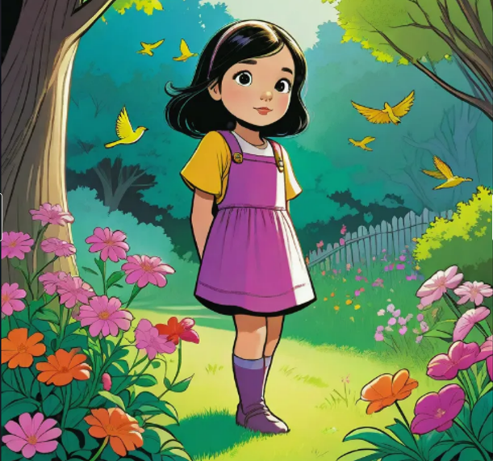
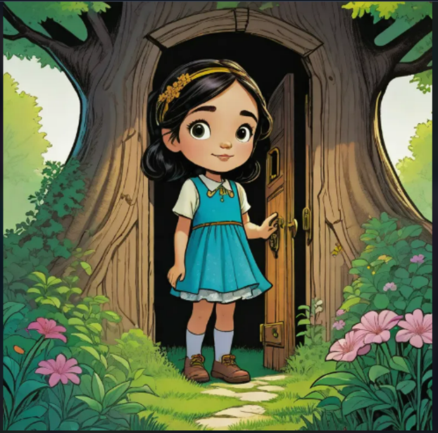
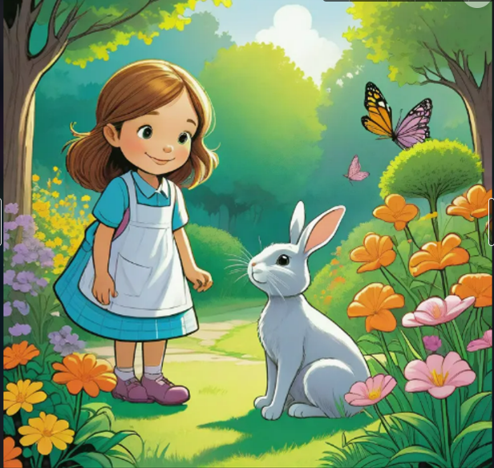
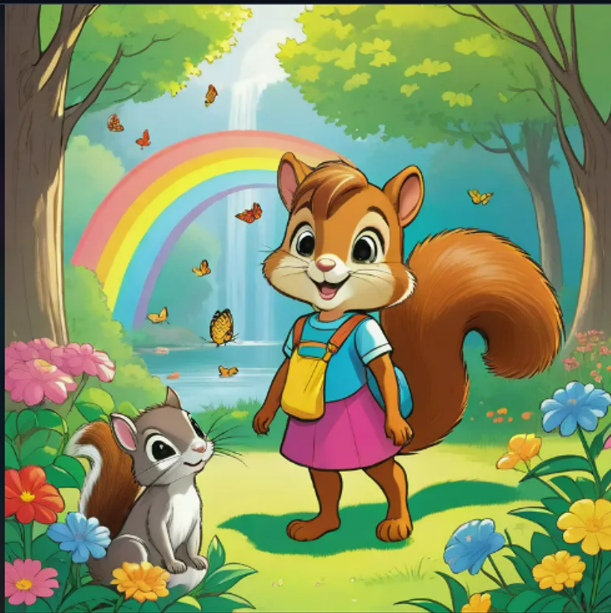
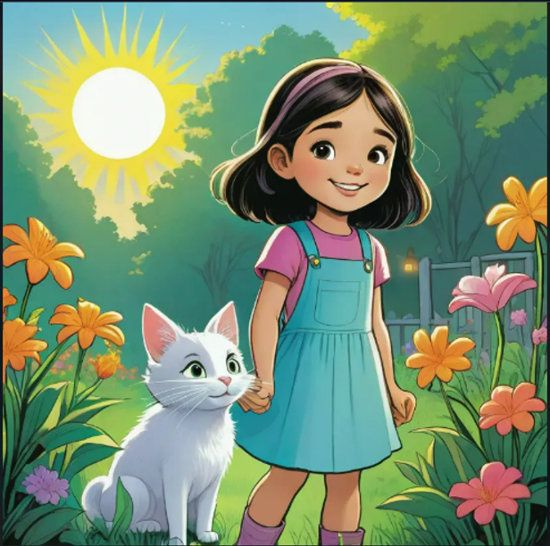
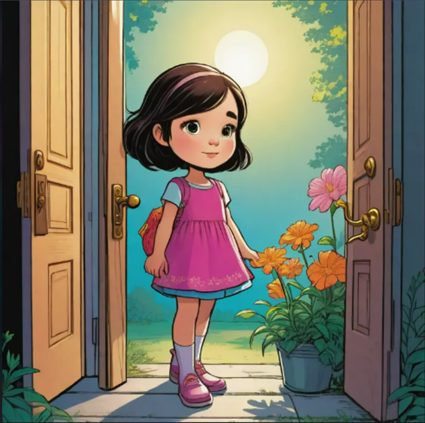
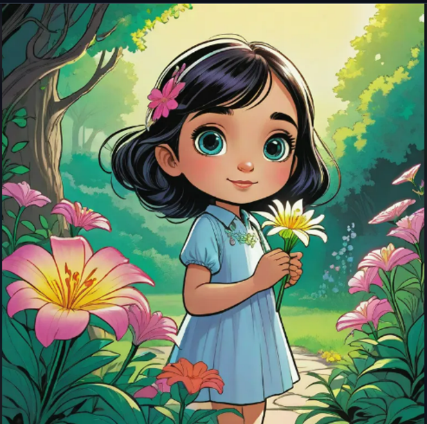

Lily, a sweet girl, lived alone with her parents in the Mystic Forest. She loved her home, but she would get lonely at times as there were no friends around.

She enjoyed walking through the forest, and she always carried her grandpa’s key with her. He had told her that she would find the door to that key one day, so she would explore the forest looking for the door
One day, as she walked through the tall sunflowers, she came across a door that had a symbol similar to her grandpa’s key. She put the key in, hoping the door would unlock, but instead, a voice told her to answer a question if she wanted to get inside

She answered the question and walked through the magical door, where she came across animals.

What surprised her was that she could understand what they said.

She talked with the rabbit, the squirrel, and the chipmunk. She asked them what the place was, and they said everything had a price, and she would have to help them with their tasks to know the truth about the place. The chipmunk asked her:

After helping the chipmunk, they took her to the cat.

who showed her around and gave her a special bag, which she could use to get back home.
At the sound of "home," she realized how much she missed her parents and started to look through the bag. She found a big book full of questions. She flipped to the last page, which said, "To go home, answer this:"

Lily, the smartypants, got it right, and suddenly, with a flash of light, she reached her home and hugged her parents. Lily understood the meaning of family and never ran away after that.
The End